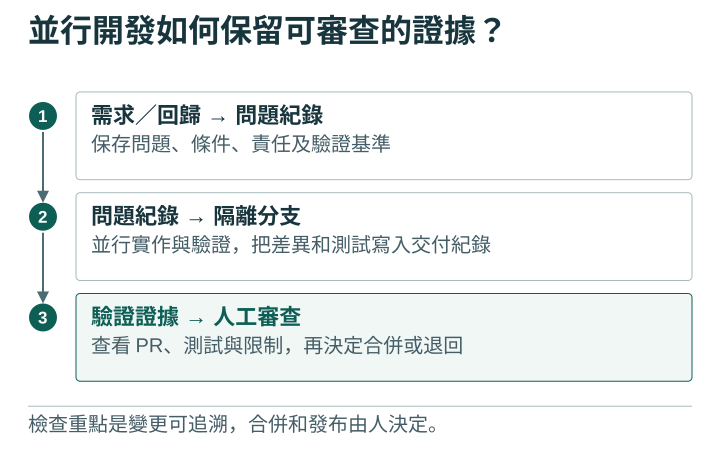
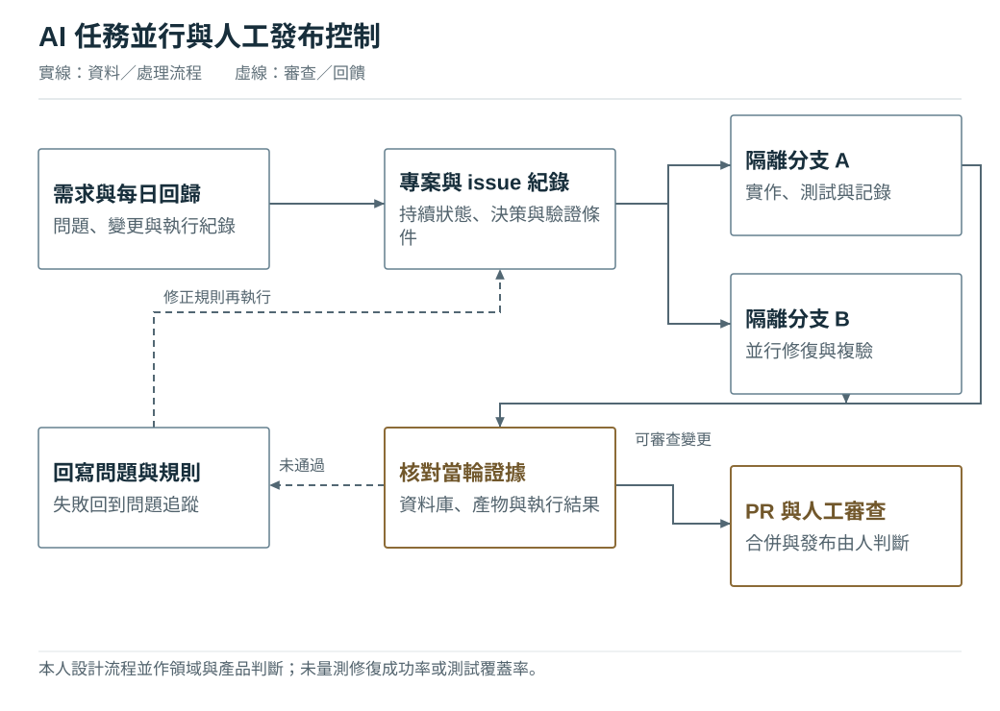

工程實務
可追溯的 AI 協作開發
建立專案與 issue 紀錄架構，連結每日所有功能回歸、並行修復與驗證，以及人工審查與發布決策。
- 負責範圍
- 建立需求、工具規範、持續上下文與驗證流程，協調 AI agents 在隔離分支開發、修復與複驗；負責產品與領域判斷，與 reviewer 審查合併及發布。
- 成果與狀態
- 已建立可回查的需求、決策、分支、測試及交付紀錄，用於每日功能回歸、並行修復與驗證，以及新功能開發。
- 紀錄時間
- 2026 年流程運行紀錄
情境與目標
AI 加快實作後，錯誤假設、證據失真及待審分支需可追蹤控制流程。

檢查重點是變更可追溯，合併和發布由人決定。（點圖放大）系統架構與流程
架構說明
- 輸入
- 需求、程式變更、測試與日常回歸產生的問題。
- 處理方式
- 以專案及issue保存狀態和決策，AI在隔離分支並行實作、修復與複驗。
- 產出
- 可審查的變更、驗證紀錄與PR；結果回饋為規則，合併與發布由人判斷。
流程圖

本人設計流程並作領域與產品判斷；未量測修復成功率或測試覆蓋率。（點圖放大）關鍵設計取捨
讓多個AI任務能並行，也能接手與追查
挑戰多項開發與修復同時進行，聊天上下文與零散分支不足以保存決策、驗證及待審狀態。
方法與取捨建立專案及issue記錄架構，將持續狀態、當日變化及驗證依據分開。我建立環境與接手契約，串接每日所有功能回歸、分支實作及測試、AI協調、領域判斷與人工審查。
結果讓新功能與維護共用可接續的工作循環：需求、分支、每日回歸、並行修復／驗證及人工發布決策都有紀錄。
驗證要能推翻報告上的成功
挑戰自動工作可能有輸出或成功標記，實際卻沒有執行或提交，形式齊全仍可能是假驗證。
方法與取捨我建立驗證與結案條件，要求回查資料庫、實際產物及當輪執行紀錄；執行與複核分開，未通過的結果回到問題追蹤、測試及規則修正。
結果結案條件回到當輪執行與原始證據，辨識歷史殘留輸出、未落檔及受阻提交等情況，再回寫 issue 與驗證規則。
更多技術細節
怎麼確認展示版真的包含修正
我在版本發布前審查修正，交叉核對問題紀錄、程式碼合併狀態與展示版本，區分哪些修正仍待合併、哪些已可複驗，以及哪些已完成驗收。
成果與驗證範圍
實際產出
已建立可回查的需求、決策、分支、測試及交付紀錄，用於每日功能回歸、並行修復與驗證，以及新功能開發。
驗證與限制
驗證涵蓋實際執行與產物核對；測試覆蓋率、修復成功率及效率改善尚未量測，共用服務仍需獨立控管。